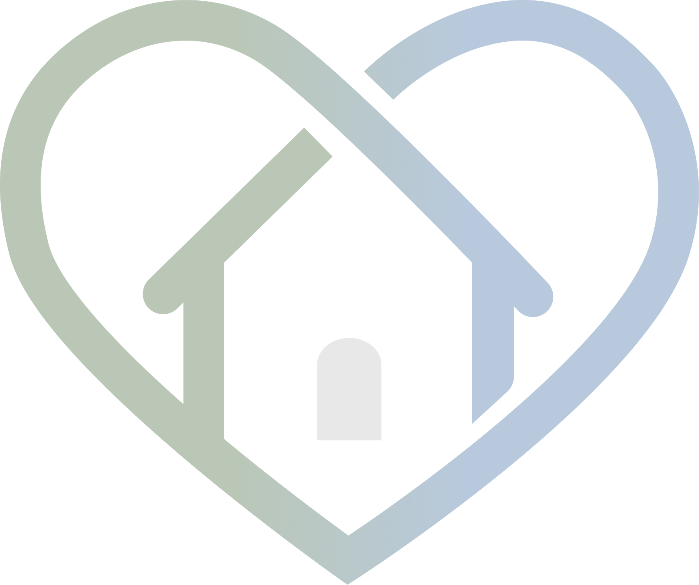
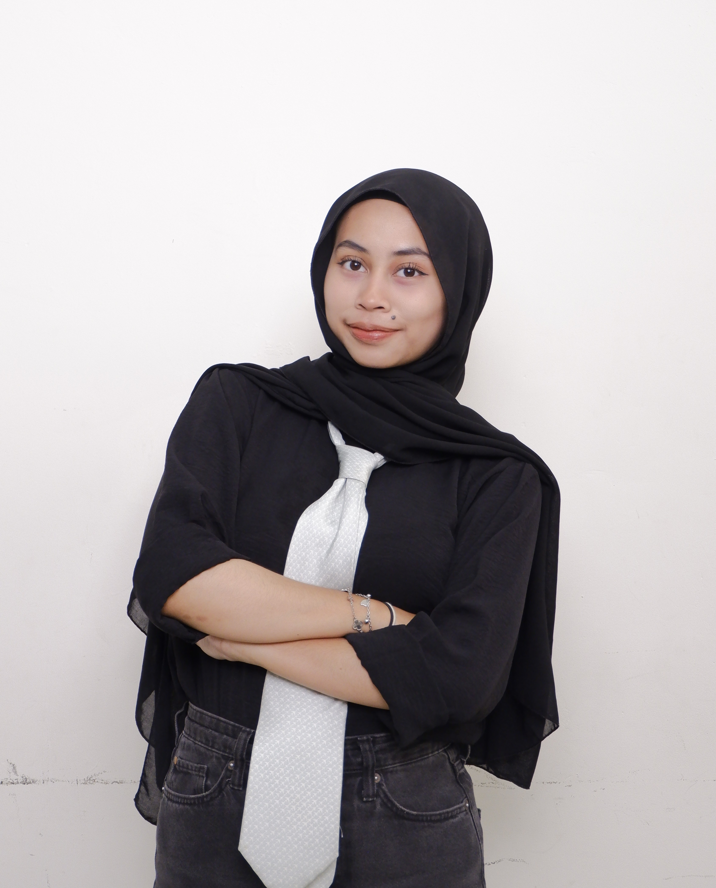

Panduan rehabilitasi pasca-operasi mandiri langkah demi langkah untuk mencegah komplikasi dan mempercepat kesembuhan keluarga tercinta Anda.
Pelajari Lebih LanjutUntuk memberikan ruang aman dan langkah pemulihan yang mudah diakses bagi pasien dan keluarga. Karena setelah pulang dari RS, pasien sering merasa panik, kebingungan, dan khawatir saat menghadapi masa pemulihan tanpa pendampingan intensif dari tenaga medis. Kami hadir untuk menenangkan kecemasan akibat keterbatasan tenaga medis dengan pemantauan recovery yang lebih terstruktur. Kami membawa perawat di rumah, memandu dan membantu pemulihan agar pasien merasa lebih aman di masa transisi yang sulit.
Menurut Beberapa Studi Empiris
Pasien dan pendamping sering bingung dan panik terkait langkah spesifik apa yang harus dilakukan jika terjadi kondisi tertentu.
Gejala kritis kadang terlihat seperti tidak berbahaya, dan sebaliknya. Perbedaan ini sering luput dari pengawasan orang awam.
Kurangnya petunjuk langkah demi langkah harian dari profesional medis untuk pemulihan optimal di rumah.
Layanan Utama RuangPulih
Panduan pemulihan harian sesuai prosedur.
Deteksi dini gejala kritis pasca bedah.
Pantau kondisi luka dan perkembangan.
Artikel edukasi valid tenaga profesional.
Langkah mudah menggunakan RuangPulih.
Lengkapi data rekam medis sederhana mengenai riwayat penyakit, alergi, dan riwayat operasi sebelumnya untuk mendapatkan roadmap pemulihan yang dipersonalisasi.
Dapatkan panduan tahapan pemulihan setiap harinya, mulai dari pantangan makanan, tingkat aktivitas fisik, hingga tips merawat luka secara mandiri.
Ikuti instruksi harian dengan disiplin, laporkan keluhan melalui fitur log, dan manfaatkan fitur konsultasi jika ada kondisi di luar kendali.

5049231049
5049231051
5049231107
RuangPulih adalah platform panduan dan pendamping mandiri, dan tidak bisa mengganti diagnosis serta penanganan medis secara profesional.
Panduan rehabilitasi mandiri langkah demi langkah untuk mencegah komplikasi dan mempercepat kesembuhan keluarga tercinta Anda.
© 2026 RuangPulih - All rights reserved